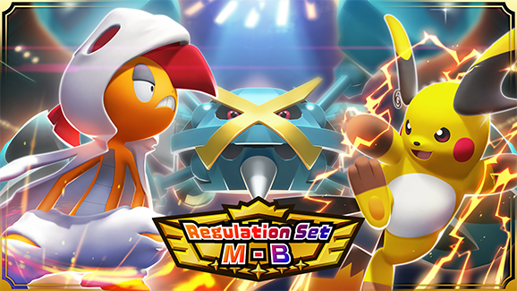
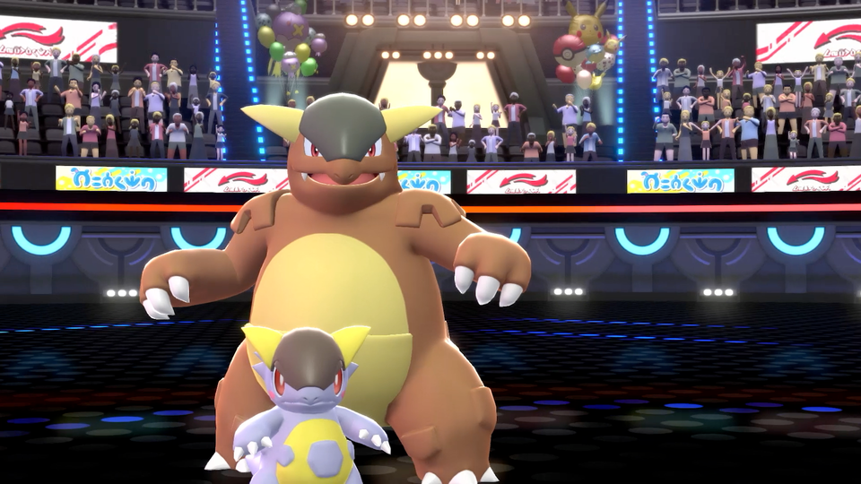
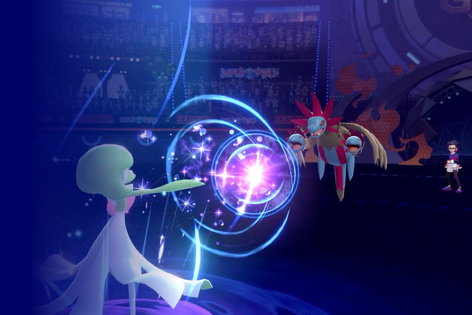

포켓몬 챔피언스 메가진화 16종 조합법 (레귤레이션 M-B)
포켓몬 챔피언스 레귤레이션 M-B에서 새로 풀린 메가진화 16종, 하나하나 성능은 다들 어느 정도 아실 텐데요, 정작 랭크 배틀에서 어떤 조합으로 파티를 짜야 하는지는 의외로 정리된 글이 별로 없더라고요. 이번 글은 순위표가 아니라 16종을 역할군으로 나눠서 서로 어떻게 물리는지, 그리고 입문자가 뭐부터 잡아야 랭크가 편해지는지를 조합 관점으로 풀어보겠습니다.

6월 17일 시작한 레귤레이션 M-B의 공식 발표 이미지입니다. 대여르·메타그로스·라이츄가 전면에 나온 게 이번 메가 16종 개편의 무게감을 보여주죠.
이미지: 포켓몬 챔피언스 공식
- 레귤레이션 M-B(2026.06.17~09.02)에서 새로 풀린 메가진화는 16종입니다. 전체 메가 풀은 이보다 훨씬 많지만, 이번 개편의 핵심은 이 16종입니다.
- 배틀타워가 아니라 랭크 배틀(싱글·더블)이 정식 콘텐츠입니다 — 파티 구성은 여기 맞춰야 합니다.
- 16종을 스위퍼·어태커·탱커·서포터 4갈래로 나눠 성능을 짚고, 실전 조합 3가지를 추천합니다.
- 입문자는 메가메타그로스부터 잡는 걸 추천합니다 — 이유는 아래에서.
최종 업데이트: 2026.07.09 · 기준: 레귤레이션 M-B (2026.06.17~09.02)
왜 '조합'으로 봐야 하나 — 순위표만 보면 놓치는 것
메가진화 티어를 검색하면 보통 "1위 이거, 2위 이거" 식으로 줄만 세워놓은 글이 많은데요, 실제로 랭크 배틀을 돌려보면 순위 1위 메가를 넣었다고 파티가 강해지는 게 아니라는 걸 금방 느끼게 됩니다. 이유는 간단합니다. 메가진화는 한 파티에 딱 하나만 쓸 수 있고, 나머지 5마리는 그 메가가 만든 판을 받쳐줘야 하거든요. 스위퍼형 메가를 넣었는데 판을 깔아줄 포켓몬이 없으면 그냥 평범한 딜러 한 마리로 끝나버립니다.
그래서 이번 글은 순위가 아니라 역할군으로 16종을 나눴습니다. 이렇게 보면 "내 파티에 뭐가 비어 있는지"가 눈에 들어오고, 그게 곧 다음에 뭘 메가로 맞출지의 답이 되거든요. 크게 나누면 혼자 판을 쓸어담는 스위퍼, 세팅 없이도 제 몫을 하는 어태커, 그리고 둘을 살려주는 탱커·서포터 셋으로 갈립니다. 이 세 갈래를 머릿속에 넣고 아래를 보시면 어떤 메가가 왜 강한지가 훨씬 명확하게 잡힙니다.
• • •
스위퍼형 — 판만 깔아주면 혼자 쓸어담는다
랭크에서 가장 화끈한 역할군입니다. 다만 대부분 스피드나 명중을 스스로 벌어야 진가가 나오는 타입이라, 혼자 던져놓으면 생각보다 허무하게 죽는 경우가 많습니다.
| 메가진화 | 특성 | 한 줄 평 |
|---|---|---|
| 메가라이츄Y | 노가드 | '노가드'로 확정 명중, 특공·스피드가 동시에 높아 자속 전기 기술로 밀어붙이는 특수 스위퍼 |
| 메가찌르호크 | 위협(일부 심술꾸러기) | 타입이 격투/비행으로 바뀌면서 '인파이트'를 자속으로 씁니다. 표준은 등장만 해도 상대 공격을 깎는 '위협'이고, 일부는 방어 랭크가 깎일수록 강해지는 '심술꾸러기'로 역발상 셋업을 노립니다 |
| 메가칼라마네로 | 심술꾸러기 | 상대가 랭크를 깎으면 반대로 올라가는 얄미운 특성. 자기 능력치를 스스로 낮췄다가 되돌리는 방식으로 폭딜 준비 |
| 메가번치코 | 스피드부스트 | 매 턴 스피드가 자동으로 올라가 두 번째 턴부터 대부분을 앞지릅니다. 불·격투 혼합 화력으로 벽까지 부숩니다 |
| 메가나무킹 | 피뢰침 | 풀/드래곤으로 타입이 바뀌면서 물 타입을 4배로 씹습니다. 특공·스피드가 모두 최상급이라 '용의파동' 한 방이 묵직한 특수 스위퍼 |
자료: serebii.net·game8.co 레귤레이션 M-B 메가 데이터 재구성
이 중에서 메가번치코가 특히 재밌습니다. '스피드부스트'는 턴이 지날수록 스스로 빨라지는 특성이라, 첫 턴만 버티면 그다음부턴 왠만한 포켓몬을 다 앞지르거든요. 문제는 그 첫 턴인데, 이때 상대 견제를 한 번 받아줄 서포터가 파티에 있어야 온전히 살아납니다. 스위퍼 혼자로는 완성이 안 되는 이유가 여기 있습니다.
메가라이츄Y와 메가칼라마네로는 결이 조금 다릅니다. 라이츄Y는 '노가드' 덕분에 명중률 낮은 강력한 기술도 확정으로 꽂을 수 있다는 게 장점이고, 칼라마네로는 원래 특성인 '심술꾸러기'를 역이용해 상대가 능력치를 깎으면 오히려 자기가 강해지는 얄미운 플레이가 가능합니다. 둘 다 정공법보다는 상대의 실수나 견제를 역이용하는 카드라, 처음 잡기보다는 어느 정도 랭크에 익숙해진 뒤 굴리는 걸 추천합니다.
메가나무킹은 이 넷 중에서 가장 스탯이 정직합니다. 세팅 셔틀 없이도 특공·스피드가 최상급이라 바로 던져도 힘이 나오지만, 풀/드래곤 전환으로 페어리 약점이 새로 생기는 건 감안해야 합니다. '피뢰침'은 전기 기술을 흡수해 특공을 올리는 특성이라, 상대가 전기 견제기를 들고 있을 때 특히 든든합니다.

랭크 배틀 스타디움 화면입니다. 관중이 꽉 찬 이 무대에서 메가는 딱 한 번, 정말 중요한 타이밍에 켜야 합니다.
이미지: 포켓몬 챔피언스 공식
• • •
순수 어태커형 — 판 없이도 한 방은 확실하다
스위퍼가 '조건부 폭딜'이라면, 이쪽은 세팅 없이 넣기만 해도 제 몫을 하는 실속형입니다. 초보가 처음 다룰 메가로도 부담이 적습니다.
| 메가진화 | 특성 | 한 줄 평 |
|---|---|---|
| 메가메타그로스 | 날카로운발톱 | 깡스탯 자체가 최상급. 우선도기 '기습'까지 강화되니 세팅 없이 넣기만 해도 상위권 화력이 나옵니다 |
| 메가화염레오 | 불꽃의갈기 | 불꽃 기술 위력을 50% 상시 증가시키는 이번 M-B 신규 특성. 랭크 세팅 없이도 화력이 그대로 나옵니다 |
| 메가거북손데스 | 날카로운발톱 | 바위/물에서 바위/격투로 타입이 바뀝니다. 타점이 8개로 늘지만 약점도 7개라 받는 쪽은 극단적 |
| 메가입치트 | 천하장사 | 체감 공격력이 두 배가 되는 특성이라, 강철·페어리 물리 기술 한 방이 묵직합니다 |
| 메가라이츄X | 일렉트릭메이커 | 전기 필드를 스스로 깔고 '볼트태클'로 밀어붙이는 물리형. Y와 달리 잠듦 방지·전기 기술 강화까지 겸하는 필드형 어태커 |
자료: serebii.net·game8.co 레귤레이션 M-B 메가 데이터 재구성
메가메타그로스는 이번 16종 중에서도 가장 '실패 확률이 낮은' 카드입니다. 특별한 날씨나 필드를 깔 필요도 없고, 상대 랭크업을 기다릴 필요도 없이 내밀면 그 자체로 위협이 되거든요. 그래서 처음 메가진화를 굴려보는 분들껜 이 포켓몬부터 추천하는 편입니다. 반대로 메가거북손데스는 타점은 넓어져도 약점이 7개나 되는 만큼, 상대 파티를 보고 넣을지 말지 판단하는 게 중요합니다.
메가라이츄X는 앞서 나온 라이츄Y와 이름만 같지 결은 완전히 다릅니다. '일렉트릭메이커'로 필드를 깔아두면 전기 기술 위력이 오르고 잠듦도 막아주는데, 정작 자기 자신은 특수가 아니라 물리 스탯이 특화돼 있어 볼트태클을 자속으로 꽂습니다. 문제는 방어가 낮아서 땅 타입 기술 한 방에 훅 가는 편이라, 상대 파티에 땅 어태커가 보이면 조심해서 넣어야 합니다.
"16종 중 뭐부터 잡을지 고민된다면, 세팅 없이도 강한 어태커가 가장 안전한 시작점입니다."
• • •
탱커·서포터형 — 스위퍼·어태커가 살아남게 만드는 뒷배
순위표엔 잘 안 잡히지만, 실전 랭크에서 파티를 완성시키는 건 결국 이쪽입니다. 스위퍼가 첫 턴을 버티고, 어태커가 반복해서 들어갈 수 있는 것도 이 역할군 덕입니다.
| 메가진화 | 특성 | 한 줄 평 |
|---|---|---|
| 메가곤율거니 | 위협 | 등장만 해도 상대 물리 공격을 깎는 대표 서포터. 스위퍼가 안전하게 교체해 들어올 자리를 만들어줍니다 |
| 메가드래캄 | 광란 | HP가 절반 이하로 떨어지면 특공이 확 오르는 '광란' 특성이라, 느린 대신 특수 내구로 한 대 버티고 오히려 화력이 매서워지는 저HP 역전형 카드 |
| 메가펜드라 | 쉘아머 | 치명타를 아예 안 맞는 특성으로 바뀝니다. 스피드는 낮아져도 급소를 노리는 상대 앞에서 유독 단단합니다 |
| 메가저리더프 | Eelevate(부유+비스트부스트) | 원래도 땅 기술을 부유로 무효화하던 포켓몬인데, 상대를 쓰러뜨릴 때마다 최고 능력치가 오르는 눈덩이 특성까지 붙었습니다 |
자료: serebii.net·game8.co 레귤레이션 M-B 메가 데이터 재구성
여기서 잠깐 나머지 두 종도 짚고 넘어가면, 메가대짱이는 순동 특성으로 비만 깔리면 스피드가 두 배가 되는 물·땅 어태커고, 메가대여르는 전 스탯을 한 번에 올리는 '배수의진'이 매력적이지만 특수 내구가 낮아 그 기술을 쓰기 전에 쓰러지는 경우가 잦다고 평가됩니다. 이 둘은 앞선 역할군보다는 파티 궁합을 더 많이 타는 카드라 보시면 됩니다.
• • •
실전 조합 추천 3가지 — 역할군을 어떻게 섞나
앞서 나눈 세 역할군을 어떻게 섞느냐가 랭크 승률을 가릅니다. 제가 실전에서 도는 걸 보고 정리한 조합 세 갈래를 소개합니다.
| 조합 | 메가 축 | 받쳐줄 역할 |
|---|---|---|
| 안전 입문형 | 메가메타그로스 | '위협' 서포터 1(메가곤율거니 등) + 무난한 견제기 딜러 |
| 스피드부스트 축 | 메가번치코 | 첫 턴을 대신 받아줄 탱커(메가펜드라 등) + 위협으로 판 깔기 |
| 불꽃 화력형 | 메가화염레오 | 불꽃 견제당할 때 교체받을 물·바위 저항 포켓몬(메가대짱이 등) + 랭크 깎아줄 위협 서포터 |
표에서 보시듯 메가는 축이고, 나머지 5마리가 그 축을 살리는 역할입니다. 안전 입문형은 메가메타그로스가 세팅 없이도 화력을 내주니 나머지 자리를 자유롭게 짤 수 있어 초보에게 특히 편합니다. 반대로 스피드부스트 축은 첫 턴 생존이 성패를 가르는 만큼, 탱커 배치를 먼저 확정하고 그다음에 메가를 넣는 순서로 짜는 게 막힘이 적습니다.

가디안과 번치코가 맞붙는 공식 배틀 화면입니다. 메가진화는 저 화려한 이펙트가 뜨는 순간, 파티 전체 구도가 한 번에 바뀝니다.
이미지: 포켓몬 챔피언스 공식
이번 조합에 넣을 메가 외 나머지 포켓몬의 실전 순위는 포켓몬 챔피언스 티어표 글에서 다뤘고, 조합을 짤 때 상대 이중타입을 어떻게 찌를지는 포켓몬 챔피언스 상성표 실전 활용 글이 도움이 됩니다.
• • •
헷갈리기 쉬운 네 가지, 미리 짚고 갑니다
배틀타워는 따로 없습니다. 정식 배틀 콘텐츠는 랭크 배틀·캐주얼 배틀·프라이빗 배틀 셋이고, 실력을 겨루는 랭킹전은 랭크 배틀입니다. 파티는 이 랭크 배틀 기준으로 짜면 됩니다.
메가진화는 한 경기에 딱 한 번. 메가스톤을 든 포켓몬을 여러 마리 넣어도 실제 발동은 한 번뿐이라, 후보를 둘 이상 욱여넣기보다 한 마리를 확실히 정하고 나머지를 그 축에 맞추는 편이 효율적입니다.
입문이라면 메가메타그로스부터. 날씨·필드 조건이 없어도 넣기만 하면 화력이 나오는 몇 안 되는 카드라, 조합을 아직 못 짰을 때도 실패 확률이 낮습니다.
스위퍼가 순위표보다 약해 보이는 이유. 스위퍼는 조건이 갖춰졌을 때만 진가가 나옵니다. 사용률·평가가 높아도 첫 턴을 버텨줄 탱커나 판을 깔아줄 서포터가 없으면 순위만큼의 위력이 안 나오죠. 이 글을 순위 대신 역할군으로 나눈 이유도 여기 있습니다.
레귤레이션 M-B 메가 16종은 순위보다 역할로 봐야 합니다. 스위퍼 혼자로는 못 이기고, 탱커·서포터가 그 스위퍼가 살아남을 자리를 만들어줘야 조합이 완성됩니다. 처음이라면 세팅 없이도 강한 메가메타그로스부터 시작해서, 파티에 뭐가 비어 있는지 보며 다음 메가를 채워가는 순서를 추천합니다.
16종을 다 외울 필요는 없습니다. 지금 내 파티에 스위퍼·어태커·탱커 중 뭐가 비어 있는지만 확인하시고, 거기에 맞는 메가 한 마리부터 채워보시면 되겠습니다.